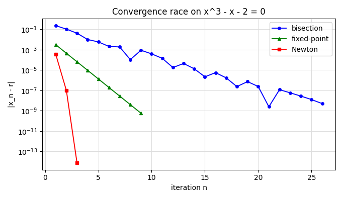

Root Finding — Self-Study
Your second hour this week. You have already seen fixed-point iteration, bisection and Newton's method in class. Here you work through them on your own: recap, follow worked examples, write the methods as MATLAB functions, and check your understanding before the next session.
Before you start
Open MATLAB Online in a second tab and sign in with your university account. Keep paper and a calculator next to you — the worked examples ask you to fill in rows by hand before revealing them.
| Part | What you do | Time |
|---|---|---|
| ① | Recap the three methods and the stopping rule | 5 min |
| ② | Follow three worked examples; complete the missing rows on paper | 15 min |
| ③ | Write myBisect and myNewton, race the methods, try the stretch problem | 25 min |
| ④ | Self-check quiz — 3 questions per method | 10 min |
| — | Buffer / note down questions for next class | 5 min |
① Recap: three ways to solve \(f(x)=0\)
Most non-linear equations have no closed-form solution, so we start from a guess and iterate until the change is below a tolerance \(\varepsilon\). Each method below has a full lesson on the Module 2 page — follow the links if something here feels unfamiliar.
| Method | Needs | Convergence | Guaranteed? |
|---|---|---|---|
| Fixed-point | a good \(g(x)\) | linear (error × \(|g'(r)|\) per step) | only if \(|g'|<1\) |
| Bisection | bracket \([a,b]\) | linear (error halves per step) | ✅ yes, if sign change |
| Newton | \(f'\) + a good guess | quadratic (digits ≈ double) | no |
② Worked examples
All three examples solve the same equation, \(f(x)=x^3-x-2=0\), whose only real root is \(r\approx1.52138\). Seeing one problem three ways makes the differences between the methods obvious.
W1 · Bisection on \(x^3-x-2\) fully worked
Initial interval \([a,b]=[1,2]\): \(f(1)=-2<0\) and \(f(2)=4>0\), so a root is bracketed. Halve until \(E_n=\tfrac{b-a}{2}<\varepsilon=0.01\), or after at most 20 iterations. Four decimals.
| n | \(a\) | \(b\) | \(c=\tfrac{a+b}{2}\) | \(f(c)\) | keep | \(E_n=\tfrac{b-a}{2}\) |
|---|---|---|---|---|---|---|
| 1 | 1.0000 | 2.0000 | 1.5000 | −0.1250 | [c, b] | 0.5000 |
| 2 | 1.5000 | 2.0000 | 1.7500 | +1.6094 | [a, c] | 0.2500 |
| 3 | 1.5000 | 1.7500 | 1.6250 | +0.6660 | [a, c] | 0.1250 |
| 4 | 1.5000 | 1.6250 | 1.5625 | +0.2522 | [a, c] | 0.0625 |
| 5 | 1.5000 | 1.5625 | 1.5312 | +0.0591 | [a, c] | 0.0312 |
| 6 | 1.5000 | 1.5312 | 1.5156 | −0.0341 | [c, b] | 0.0156 |
| 7 | 1.5156 | 1.5312 | 1.5234 | +0.0123 | [a, c] | 0.0078 < ε ✓ |
How to read a row. In row 1, \(f(a)=f(1)=-2\) and \(f(c)=-0.125\) have the same sign, so the sign change must be in the right half: keep \([c,b]\). In row 2, \(f(a)=f(1.5)<0\) but \(f(c)=+1.609\), so keep \([a,c]\).
After 7 halvings \(x\approx1.5234\) with error bound 0.0078; the true root \(1.52138\) is indeed within 0.0078 of it.
W2 · Newton on \(x^3-x-2\) partially worked
Initial value \(x_0=1.5\), \(f'(x)=3x^2-1\). Stop when \(E_n=|x_{n+1}-x_n|<\varepsilon=10^{-6}\), or after at most 20 iterations. Six decimals.
Row 0 is done for you: \(f(1.5)=3.375-1.5-2=-0.125\), \(f'(1.5)=3(2.25)-1=5.75\), so \(x_1=1.5-\tfrac{-0.125}{5.75}=1.521739\).
| n | \(x_n\) | \(f(x_n)\) | \(f'(x_n)\) | \(x_{n+1}\) | \(E_n=|x_{n+1}-x_n|\) |
|---|---|---|---|---|---|
| 0 | 1.500000 | −0.125000 | 5.750000 | 1.521739 | 0.021739 |
| 1 | 1.521739 | ? | ? | ? | ? |
| 2 | ? | ? | ? | ? | ? |
Complete rows 1 and 2 on paper. Does row 2 meet the tolerance?
Reveal answer
| n | \(x_n\) | \(f(x_n)\) | \(f'(x_n)\) | \(x_{n+1}\) | \(E_n\) |
|---|---|---|---|---|---|
| 0 | 1.500000 | −0.125000 | 5.750000 | 1.521739 | 0.021739 |
| 1 | 1.521739 | 0.002137 | 5.947070 | 1.521380 | 0.000359 |
| 2 | 1.521380 | 0.000001 | 5.943790 | 1.521380 | 0.0000001 < ε ✓ |
Look at the error column: \(0.022 \to 0.00036 \to 10^{-7}\). Each error is roughly the square of the previous one — quadratic convergence. Newton reaches six decimals in 3 steps; bisection needed 7 steps just for two.
W3 · Fixed-point: a good \(g\) and a bad \(g\) partially worked
Solve \(x=e^{-x}\) (equivalently \(f(x)=x-e^{-x}=0\), root \(r\approx0.567143\)). The same equation can be rearranged in two ways:
Option A — initial value \(x_0=0.5\), \(\varepsilon=0.01\), max 20 iterations, four decimals
| n | \(x_n\) | \(x_{n+1}=e^{-x_n}\) | \(E_n=|x_{n+1}-x_n|\) | \(E_n<\varepsilon?\) |
|---|---|---|---|---|
| 0 | 0.5000 | 0.6065 | 0.1065 | no |
| 1 | 0.6065 | 0.5452 | 0.0613 | no |
| 2 | 0.5452 | 0.5797 | 0.0345 | no |
| 3 | ? | ? | ? | ? |
| 4 | ? | ? | ? | ? |
| 5 | ? | ? | ? | ? |
Complete rows 3–5. Then notice the pattern in the \(x_n\) column: does it approach the root from one side or from both?
Reveal answer
| n | \(x_n\) | \(x_{n+1}\) | \(E_n\) | \(E_n<\varepsilon?\) |
|---|---|---|---|---|
| 3 | 0.5797 | 0.5601 | 0.0196 | no |
| 4 | 0.5601 | 0.5712 | 0.0111 | no |
| 5 | 0.5712 | 0.5649 | 0.0063 | ✓ stop |
The iterates zig-zag around the root (0.607, 0.545, 0.580, 0.560, …) because \(g'(r)\) is negative. Each error is about \(0.57\times\) the previous one — that factor is \(|g'(r)|\). Compare the cobweb demo on the Module 2 page.
Option B — the same start, \(x_0=0.5\), with \(g(x)=-\ln x\)
| n | \(x_n\) | \(x_{n+1}=-\ln x_n\) | \(E_n\) |
|---|---|---|---|
| 0 | 0.5000 | 0.6931 | 0.1931 |
| 1 | 0.6931 | 0.3665 | 0.3266 |
| 2 | 0.3665 | 1.0037 | 0.6372 |
| 3 | 1.0037 | −0.0037 | 1.0074 |
The error grows every step, and at \(n=4\) we would need \(\ln(-0.0037)\), which is not a real number — the iteration has broken down. Same equation, same starting point: only the choice of \(g\) changed. Always check \(|g'|<1\) near the root before iterating.
③ Hands-on MATLAB exercises
Copy each starter into MATLAB Online, fill in the ___ blanks, and run it. As in the labs, each function goes in its own file named after the function (e.g. myBisect.m), and every function must be called to be tested.
E1 · Turn bisection into a function
In class you ran bisection as a script. Turn it into a reusable function [root, n] = myBisect(f, a, b, tol, nmax) that returns the root estimate and the number of halvings. It must refuse to start if there is no sign change on \([a,b]\).
Test it in the Command Window, including one call that should fail:
Before running: using the bound \(\tfrac{1}{2^{n}}<2\times10^{-6}\), how many halvings do you expect?
Reveal solution & output
function [root, n] = myBisect(f, a, b, tol, nmax)
% MYBISECT Root of f on [a,b] by bisection.
if f(a)*f(b) > 0
error('f(a) and f(b) must have opposite signs');
end
n = 0;
while (b - a)/2 >= tol && n < nmax
c = (a + b)/2;
if f(a)*f(c) < 0, b = c; else a = c; end
n = n + 1;
end
root = (a + b)/2;
endroot = 1.521380 after 19 halvings Error using myBisect f(a) and f(b) must have opposite signs
The loop stops when \((b-a)/2<10^{-6}\), i.e. \(1/2^{n+1}<10^{-6}\), which first happens at \(n=19\) (\(2^{20}\approx1.05\times10^{6}\)). The second call stops at the guard — without it, bisection would silently return a meaningless "root" near 2.
E2 · Newton as a function
Write [root, n] = myNewton(f, fp, x0, tol, nmax), where fp is the derivative. Stop when \(|x_{n+1}-x_n|<\) tol or after nmax steps. Then compare it with MATLAB's fzero.
Your step count should match W2. Then change the initial value to 0.6 and compare the number of steps.
Reveal solution & output
function [root, n] = myNewton(f, fp, x0, tol, nmax)
% MYNEWTON Root of f by Newton's method from initial value x0.
x = x0;
for n = 1:nmax
xnew = x - f(x)/fp(x); % Newton update
if abs(xnew - x) < tol
root = xnew;
return
end
x = xnew;
end
root = x; % reached nmax without converging
endmyNewton = 1.5213797068 after 3 steps fzero = 1.5213797068
3 steps — the three rows of W2. From \(x_0=0.6\) the first step jumps to \(x_1\approx30.4\), and it takes 13 steps instead of 3 to come back: same method, same equation, only the initial value changed.
E3 · The convergence race
Run all three methods on \(x^3-x-2=0\) with the same tolerance \(10^{-8}\) and plot the true error \(|x_n-r|\) at every step on a log scale. For fixed-point use \(g(x)=(x+2)^{1/3}\) (from \(x^3=x+2\)). This script is complete — run it, then answer the questions below.
iterations: bisection 26, fixed-point 9, Newton 4

- Fixed-point gives a straight line on a log scale. What does that tell you about how the error shrinks? Estimate the factor per step from the plot and compare with \(g'(r)=\tfrac{1}{3(r+2)^{2/3}}\).
- Why is the bisection line jagged, even though its error bound halves every step?
- Why does the Newton curve get steeper every step instead of being straight?
Reveal answers
- A straight line on a log scale means the error is multiplied by the same factor every step — linear convergence. The line drops about one decade per 1.2 steps, a factor of ≈ 0.14, matching \(g'(r)=1/(3\cdot3.5214^{2/3})\approx0.144\).
- The bound \(\tfrac{b-a}{2}\) halves exactly, but the true error depends on where the root happens to sit in the bracket — sometimes the midpoint lands very close to it by luck (e.g. step 21), and the next step moves away again.
- Quadratic convergence: \(E_{n+1}\approx C\,E_n^{2}\), so the number of correct digits roughly doubles each step (\(3.6\times10^{-4}\to9.9\times10^{-8}\to7.5\times10^{-15}\)). The 4th error is exactly 0 in double precision, so
semilogycannot plot it.
E4 · Stretch: the bungee jumper optional
This is the opening problem of Chapra Ch. 5. A bungee jumper's velocity after \(t\) seconds of free fall is
What mass \(m\) makes the jumper reach \(v=36\) m/s after \(t=4\) s? You cannot solve for \(m\) algebraically — so write it as a root problem \(F(m)=v(4)-36=0\) and use your myBisect.
- Define
Fas an anonymous function ofm. - Find a bracket: evaluate
F(50)andF(200)— do they have opposite signs? - Call
myBisect(F, 50, 200, 1e-6, 100)and compare withfzero(F, [50 200]). - Why would Newton be less convenient here?
Reveal solution & output
g = 9.81; cd = 0.25; t = 4; v = 36;
F = @(m) sqrt(g*m/cd) .* tanh(sqrt(g*cd./m)*t) - v;
fprintf('F(50) = %.4f, F(200) = %.4f\n', F(50), F(200));
[m, n] = myBisect(F, 50, 200, 1e-6, 100);
fprintf('myBisect: m = %.4f kg after %d halvings\n', m, n);
fprintf('fzero: m = %.4f kg\n', fzero(F, [50 200]));F(50) = -4.5794, F(200) = 0.8603 myBisect: m = 142.7376 kg after 27 halvings fzero: m = 142.7376 kg
Newton would need \(F'(m)\), and differentiating this expression with respect to \(m\) by hand is messy and error-prone. Bisection only needs a bracket — which is why a derivative-free method is often the practical choice for "real" formulas. (Next week's secant method is another way around the derivative.)
④ Self-check
Three questions per method. Aim for at least 7 / 9; if you miss a question, read its explanation and revisit the linked lesson before next class.
Before next class
You are ready for the next session if you can:
- rearrange \(f(x)=0\) into \(x=g(x)\) and decide, using \(|g'(r)|\), whether the iteration will converge;
- carry out bisection by hand, choose the correct half each step, and predict the number of halvings from the error bound;
- carry out Newton's method by hand and explain why a near-zero \(f'\) or a poor initial value can make it fail;
- write
myBisectandmyNewtonas MATLAB functions with a tolerance and an iteration cap, and check them againstfzero.